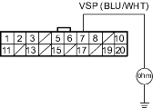
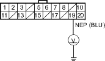

DTC 22: Vehicle Speed Sensor Signal
DTC 23: Engine Speed Signal
NOTE:
- Information marked with an asterisk (*) applies to CVT model.
- If the MIL indicator is ON, troubleshoot the PGM-FI system first.
- When the engine is running at 2,000 rpm (min-1) or above and the vehicle speed is 1 km/h (0. 62 mph) or below for 6 minutes the EPS indicator comes on.
- When the vehicle speed is 10 km/h (6.2 mph) or above and the engine is running at 280 rpm (min-1) or below for 3 seconds, the EPS indicator comes on.
- Start the engine and check the tachometer.
Is the tachometer working correctly?
YES - Go to step 2.
NO - Go to step 10.
- Test-drive the vehicle above 15 km/h (9.3 mph).
Is the speedometer working correctly?
YES - Go to step 3.
NO - Perform the speedometer system troubleshooting (see page 22-94). 
- Turn the ignition switch OFF.
- Disconnect the VSS 3P connector (ECM/PCM connector E, 31P)* and EPS control unit connector C (20P).
- Check for continuity between the EPS control unit connector C (20P) terminal No. 7 and body ground.
EPS CONTROL UNIT CONNECTOR C (20P)

Is there continuity?
YES - Repair short to body ground in the wire between the VSS (ECM/PCM)* and EPS control unit.
NO - Go to step 6.
- Connect the VSS 3P connector (ECM/PCM connector E, 31P)*.
- Block the rear wheels and raise the vehicle, and make sure it is securely supported.
- Turn the ignition switch ON (II).
- Block the right front wheel, and slowly rotate the left front wheel, and measure the voltage between the EPS control unit connector C (20P) terminal No. 7 and body ground.
EPS CONTROL UNIT CONNECTOR C (20P)
Does the voltage pulse 0 V and 5 V?
YES - Check for loose EPS control unit connectors. If necessary, substitute a known-good EPS control unit and recheck.
NO - Repair open in the wire between the EPS control unit and VSS (ECM/PCM)* or faulty the VSS (ECM/PCM)*.
- Turn the ignition switch OFF, and disconnect the EPS control unit connector C (20P).
- Start the engine, and let it idle.
- Measure the voltage between the EPS control unit connector C (20P) terminal No. 19 and body ground.
EPS CONTROL UNIT CONNECTOR C (20P)

Is there about 6 V at idle?
YES - Check for loose EPS control unit connectors. If necessary, substitute a known-good EPS control unit and recheck.
NO - Go to step 13.